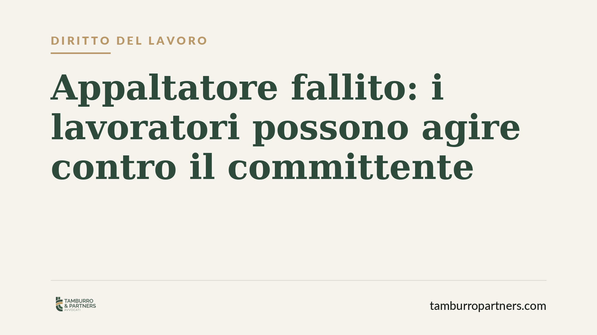

Appaltatore fallito: i lavoratori possono agire contro il committente
Quando l'impresa appaltatrice fallisce, i lavoratori rischiano di restare senza retribuzione. Una recente pronuncia della Corte d'Appello di Catania conferma che l'art. 1676 del codice civile consente di rivolgersi direttamente al committente per ottenere le somme dovute, entro il limite del debito che questi ha ancora verso l'appaltatore. Un'arma spesso ignorata, ma decisiva.

Il caso e perché conta
Il fallimento dell'appaltatore è uno degli scenari più temuti da chi lavora negli appalti. Le somme dovute confluiscono nella procedura concorsuale e i lavoratori diventano creditori chirografari o privilegiati, con tempi lunghi e recuperi spesso parziali.
Esiste però una via alternativa, prevista dal codice civile fin dal 1942 e talvolta trascurata: l'azione diretta verso il committente. La Corte d'Appello di Catania, sezione lavoro, con pronuncia del giugno 2026, ha ribadito l'ammissibilità di questa azione anche quando l'appaltatore è fallito, purché ricorrano precise condizioni.
Inquadramento normativo
Il riferimento è l'art. 1676 del codice civile, secondo cui "coloro che, alle dipendenze dell'appaltatore, hanno dato la loro attività per eseguire l'opera o per prestare il servizio possono proporre azione diretta contro il committente per conseguire quanto è loro dovuto, fino alla concorrenza del debito che il committente ha verso l'appaltatore nel tempo in cui essi propongono la domanda".
Due elementi vanno letti con attenzione. Il primo è la natura della tutela: i lavoratori dell'appaltatore possono "saltare" il proprio datore di lavoro e chiedere direttamente al committente. Il secondo è il limite quantitativo: il committente risponde solo nei limiti di quanto ancora deve all'appaltatore al momento della domanda. Se il committente ha già saldato tutto, l'azione diretta si svuota.
Questa norma va coordinata con l'art. 29 del D.Lgs. 276/2003, che disciplina la responsabilità solidale del committente negli appalti di opere e servizi. Si tratta di due strumenti distinti: la solidarietà dell'art. 29 opera entro due anni dalla cessazione dell'appalto e non è vincolata al residuo debito; l'azione diretta dell'art. 1676, invece, prescinde dal termine biennale ma incontra il limite del credito residuo.
Implicazioni pratiche
Per il lavoratore dell'appaltatore fallito, il messaggio è chiaro: il fallimento del datore di lavoro non chiude ogni porta. Se il committente ha ancora somme da versare all'appaltatore, quelle somme possono essere intercettate a copertura delle retribuzioni arretrate.
Il vantaggio è la rapidità: si evita, almeno in parte, l'insinuazione al passivo e l'attesa del riparto. Il limite, però, è concreto: occorre dimostrare che al momento della domanda il committente fosse ancora debitore verso l'appaltatore. Da qui l'importanza della tempestività.
Per il committente il tema è di gestione del rischio. Una volta ricevuta la domanda del lavoratore, non può più pagare liberamente l'appaltatore per la parte oggetto della richiesta, pena il rischio di dover pagare due volte.
Cosa fare in concreto
- Verificate subito lo stato dei pagamenti tra committente e appaltatore. L'azione diretta ha senso solo se esiste un debito residuo: raccogliete elementi su fatture, stati di avanzamento lavori e importi non ancora liquidati.
- Agite con tempestività. Il limite dell'art. 1676 si cristallizza al momento della domanda. Notificate la richiesta prima che il committente saldi l'appaltatore.
- Documentate il credito retributivo. Buste paga, contratto, prospetti delle mensilità non pagate e TFR maturato costituiscono la base della pretesa.
- Valutate in parallelo l'insinuazione al passivo e la solidarietà ex art. 29. L'azione diretta non esclude gli altri rimedi: vanno coordinati per non perdere tutele.
- Coinvolgete un professionista prima di rinunciare a qualsiasi via. La sovrapposizione tra codice civile, disciplina degli appalti e procedura concorsuale richiede una strategia calibrata sul caso concreto.
Conclusione
L'orientamento confermato dalla Corte d'Appello di Catania rafforza uno strumento di tutela che merita maggiore attenzione. Il fallimento dell'appaltatore non equivale automaticamente alla perdita delle retribuzioni: la chiave è la tempestività e la corretta individuazione del residuo debito del committente.
Consigliamo di non affidarsi a soluzioni standard: ogni appalto ha una struttura di pagamenti propria, che condiziona l'efficacia dell'azione.
---
*Contributo informativo a cura di Tamburro & Partners - Avv. Giuseppe Tamburro. Non costituisce parere legale.*
Ogni storia di lavoro ha i suoi tempi.
Se gestisci HR e vuoi un confronto su contenzioso, ispezioni o licenziamenti, scrivi allo studio. Ti rispondiamo entro un giorno lavorativo.